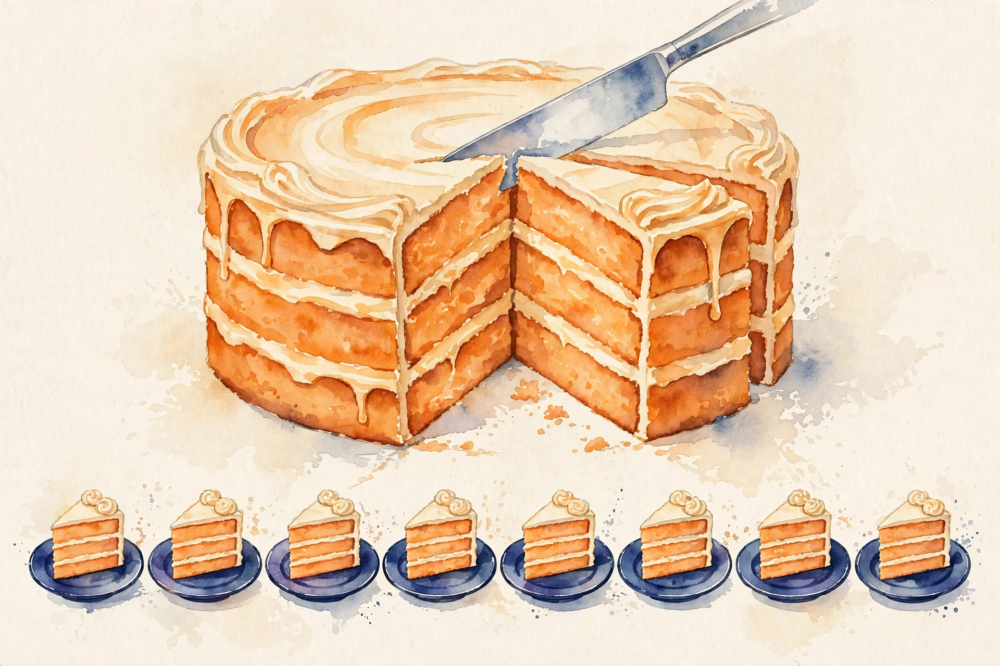
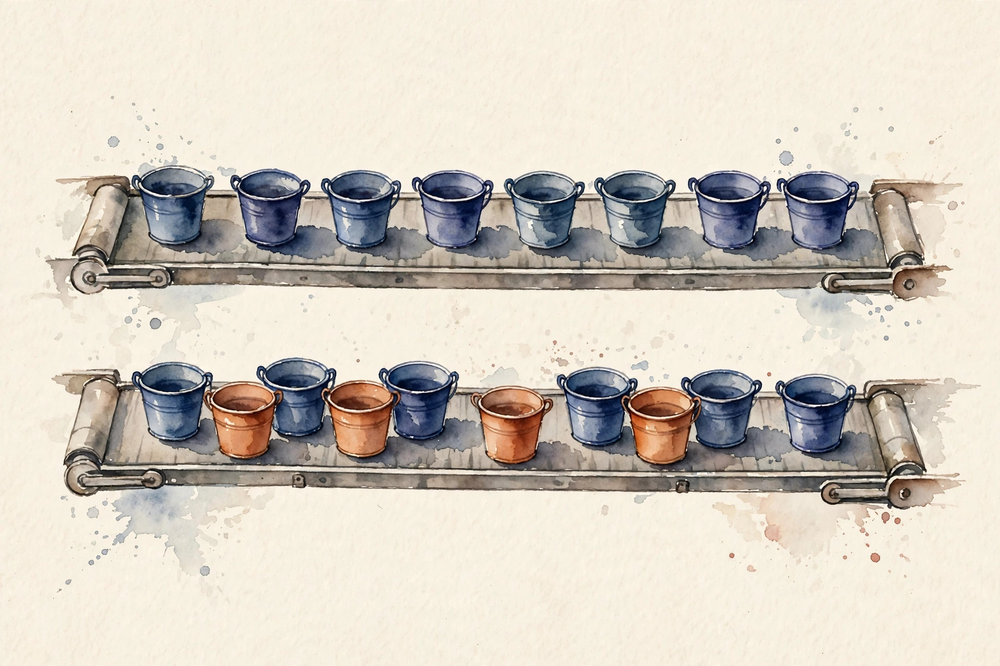

Companion · narrated from the lesson document
A 7B model with Adam needs 84 GB, more than one 80 GB GPU holds. This companion walks the distributed unit: data-parallel averaging, all-reduce, the three ZeRO stages, bucketing and overlap, loss scaling, FSDP, checkpoints, scaling efficiency, fault tolerance, deterministic loading, and the invariants that verify it all.
From the lesson The idea, and every number beside it, comes from the cited section of u08_data_sharding.md. The phrasing is the companion's.
Illustration Invented by the companion: an analogy, a toy with made-up values, or a what-if. Never lecture content.
companion Companion voice: the idea above the tag is from the lesson. The generalization below it is the companion's.
Provenance: no full lecture transcript exists for this session. The page narrates the lesson document content/v2/cs336/lessons/u08_data_sharding.md, not a video. Claim class: REQUESTED-BRANCH. Standing note: no cluster on the lesson's build box. Distributed algorithms are studied as numpy simulations of the math. Every number carries the lesson section that reports it.

Section 1 · Remediation
From the lessonRemediation
A 7B model in fp16 with Adam needs 14 GB params + 14 GB grads + 56 GB optimizer states = 84 GB. More than one 80 GB GPU holds. Data parallelism replicates the model and splits the batch. ZeRO shards the states so the 84 GB divides across GPUs: 10.5 GB/GPU at ZeRO-3 over 8. From visuals/compute_u08.py, executed 2026-10-06.
visuals/compute_u08.py, executed 2026-10-06.The optimizer states are the largest row: 56 of 84 GB. That is why ZeRO shards them first.
Section 2 · C01, C02
From the lessonC01 §2, §3, §5, §6
N GPUs each see 1/N of the batch. What update keeps the math identical? Each rank computes grads on its shard, all-reduces (sums) them, divides by N. The result is the exact gradient of the concatenated batch. grad(mean over N*m) = mean over ranks of grad(shard means). All-reduce sums, dividing by N completes the mean. The lesson's run, executed 2026-10-06: the mean identity holds exactly. DP is algebraically identical to one big batch, up to RNG (U05-C08). The cost: communication of the full grads per step. Memory stays replicated, which is the problem C03 solves.
From the lessonC02 §2, §3, §5, §6
Which all-reduce for 14 GB over 8 GPUs? Ring: bandwidth-optimal, time ≈ 2*(N-1)/N * bytes/bw, independent of N for large N. Tree: latency-optimal, 2*log2(N) steps, better for small messages. Large grads use ring, small scalars use tree. The lesson's run, executed 2026-10-06: ring takes 0.122 s on 14 GB at 200 GB/s. Ring is the bandwidth-optimal baseline. All-gather and reduce-scatter are the pieces of ring all-reduce, reused in ZeRO.
Forgetting the /N multiplies the effective lr by N, and training diverges. And tree for 14 GB: the latency terms are fine, but ring wins on the bandwidth term.
Section 3 · C03
From the lessonC03 §2, §3, §5, §6
Where do the 84 GB go? ZeRO-1 shards optimizer states, ZeRO-2 adds grads, ZeRO-3 adds params, gathered on demand per layer. Each stage trades communication for memory: stage 3 adds an all-gather per layer in forward and backward. Bytes/GPU = replicated parts + sharded parts / N. Stage 1: (14 + 14 + 56/8). Stage 2: (14 + (14+56)/8). Stage 3: 84/8. The lesson's run on 7B over 8 GPUs, executed 2026-10-06: ZeRO-1 gives 35.0, ZeRO-2 gives 22.8, ZeRO-3 gives 10.5 GB/GPU.
visuals/compute_u08.py, executed 2026-10-06.From the lessonC03 §5 ZeRO toy. Give params in billions and GPU count. The toy runs the lesson's per-stage formulas.
Params (B) GPUs
Press the button.
fp16 params and grads (2 bytes), fp32 optimizer states (8 bytes): P, G, O = 2/2/8 bytes per param. Stage formulas from C03 §5.
ZeRO-3 with tiny layers: the all-gather latency dominates, and training slows versus ZeRO-2.
From the lessonC03 §9, §10
Stage 3's all-gathers add about 50 percent communication. Overlap (C08) hides most of it. The alternative: model parallelism (U09) for single layers that exceed one GPU. ZeRO fits the common case.
Section 4 · C04, C08
From the lessonC04 §2, §3, §5, §6
Must the backward finish before any communication? Bucket grads as layers finish, in reverse order, and all-reduce each bucket while the next layer's backward computes. Communication hides behind compute when buckets are sized so all-reduce time <= layer time. Total = max(compute chain, comm chain) + edge effects. With comm <= compute per layer, the total is about compute + one bucket. The lesson's run, executed 2026-10-06: 8 layers at 12 ms compute + 3 ms bucket all-reduce gives 96 ms sequential versus 36 ms overlapped.
From the lessonC08 §2, §3, §5, §6
When is communication free? Overlap needs independent work: the next layer's compute runs while the previous layer's collective flies. The condition: collective time <= compute time of the overlapping region. Exposed = max(0, comm - compute). Total = compute + exposed. Bucketing (C04) and prefetching shape the schedule to satisfy the condition. The lesson's run: total 36 ms versus 96 sequential.
visuals/compute_u08.py, executed 2026-10-06.From the lessonC04 §5 Overlap toy. The toy implements the lesson's schedule formula: sequential = L*(c+m), overlapped ≈ max(L*c, L*m) + min(c, m).
Layers compute ms comm ms
Press the button.
The lesson's simulator is the reference output (96 vs 36 above). The toy follows the §5 formula. Note: the §5 formula at these inputs gives 120 sequential / ~99 overlapped, which differs from the simulator's 96/36. The simulator is treated as the reference.

Buckets too large: the first all-reduce starts late and the tail stays exposed. And overlapping with the wrong stream dependency serializes the "overlap" so nothing hides.
From the lessonC04 §9, §10, C08 §9, §10
Bucketing costs one extra copy of memory and bucket-size tuning. No overlap is simple and slow. Overlap is standard. The alternative to overlap is faster links (money). Overlap is the software answer.
Section 5 · C05
From the lessonC05 §2, §3, §5, §6
Tiny grads vanish in fp16. What now? Keep master weights in fp32, compute in fp16. Multiply the loss by S before backward: grads shift into the representable range. Unscale before the optimizer step, skip the step on overflow, adapt S dynamically. d(S*loss)/dw = S*dloss/dw: linear, so dividing by S recovers the true grad. Overflow in any grad sets the skip flag. The lesson's toy, executed 2026-10-06: grad 6e-8 underflows, scaled by 1024 it is 6.14e-05, representable, unscale after.
Fixed S too large: every step overflows and training silently stalls, with all steps skipped.
From the lessonC05 §9, §10
One extra fp32 weight copy. The alternative is divergence. bf16 has wider range and often needs no scaling. fp16 needs the scaler.
Section 6 · C06, C07
From the lessonC06 §2, §3, §5, §6
How does ZeRO-3 run a layer whose params live on 8 GPUs? Before a layer: all-gather its params, each rank contributing its shard. Compute. After: release the gathered params, keep the shard. Backward: same, plus reduce-scatter the grads into shards. The cycle's communication per layer: 2 all-gathers (forward + backward) + 1 reduce-scatter. The compute sees full params, memory holds shards. The lab simulates the cycle on a toy layer: 1M params over 4 ranks, gathered 4 MB bf16 per layer use, resident 1 MB.
From the lessonC06 §9, §10, §11
Communication per layer, mitigated by overlap and large layers. The alternative: ZeRO-2 + DP (less comm, more memory). FSDP when memory binds. The trap: wrapping each tiny op as a unit makes all-gather latency dominate. The assumption "finer is better" breaks. Wrap at layer granularity or larger.
From the lessonC07 §2, §3, §5, §6
Each rank holds 1/8 of the optimizer. How do you save? Option A: all-gather to rank 0, save one file (simple, slow, memory spike). Option B: each rank saves its shard (fast, N files, needs consolidation to resume on different N). Sharded save: N files of total/N each. Resuming on M != N ranks needs resharding: concatenate then re-split. The lab: 84 GB total, option A writes one 84 GB file, option B writes 8 x 10.5 GB.
Resuming sharded files on a different N without resharding: shape mismatches, crash.
Section 7 · C09
From the lessonC09 §2, §3, §5, §6
Strong scaling: fixed work, more GPUs. Efficiency = T1 / (N * TN). Weak scaling: fixed work per GPU. Ideal TN = T1/N. Efficiency measures the overhead: communication, imbalance, stragglers. The lesson's toy, executed 2026-10-06: 100 s on 1 GPU, 14 s on 8, 89 percent efficiency. 85 to 95 percent is healthy. Below 70 percent, something is wrong.
visuals/compute_u08.py, executed 2026-10-06.One straggler GPU: all collectives wait, efficiency tanks, and the average looks like a communication problem.
From the lessonC09 §9, §10
Measurement time costs, the alternative is blind scaling. Profiling the step breakdown goes deeper. Efficiency is the headline number.
Section 8 · C10
From the lessonC10 §2, §3, §5
What is lost? Checkpoint every k steps (U05-C11). On failure, restart from the latest. Lost work <= k steps. Elastic training re-forms the group at a new N, which needs resharding (C07). Expected waste = checkpoint cost + (failure rate * k/2 * step time). Optimize k against the failure rate. The lab: k=100, step 10 s, failure every 24 h, expected waste per failure about 500 s of work + restart.
Checkpointing to the same dying filesystem: the checkpoint is corrupt and the restart fails.
From the lessonC10 §9, §10
Checkpoint I/O trades against lost work. Redundant compute is the expensive alternative. Checkpoint-restart is standard.
Section 9 · C11, C12
From the lessonC11 §2, §3, §5, §6
Each rank must see different data, deterministically. Shard the dataset by rank (interleaved or contiguous), seed each worker's RNG from (seed, epoch, rank). Resume restores the loader position (U05-C11). Determinism: same (seed, epoch, rank, N) gives the same batches. Rank r takes indices r, r+N, r+2N, ... (or a contiguous chunk). The epoch seed shuffles globally first. The lab: 100 items, 4 ranks, 25 each, disjoint, union = all.
From the lessonC11 §11
Same seed on all ranks: every rank trains on identical data, the effective batch is 1/N, and the run looks mysteriously slow to converge. The assumption "seeds differ" breaks silently. The symptom is weak scaling of loss.
From the lessonC12 §2, §3, §5, §6
The loss looks fine. Is the distribution right? Four invariants: (1) DP update equals big-batch update, (2) shards are disjoint and covering, (3) all ranks agree on the step count, (4) checkpoint reshard round-trips exactly. Each is an independent re-derivation of a distributed property from the single-GPU semantics. The lab: all four pass on the correct simulator, and the missing-/N bug fails invariant 1. Seconds, run before scaling up. But invariants pass and NCCL still hangs at scale: the math is right, the system is not. The assumption "math covers systems" breaks. Invariants complement systems testing.
Section 10 · Synthesis
From the lesson The arc, end to end. 84 GB does not fit in 80 GB, so the states must divide (remediation). Data parallelism averages shard grads into the exact big-batch update, over ring all-reduce for large messages (C01, C02). ZeRO shards optimizer states, then grads, then params: 35.0, 22.8, 10.5 GB/GPU on 7B over 8 (C03). Bucketing overlaps collectives with backward compute (C04, C08). Loss scaling keeps fp16 grads representable (C05). FSDP gathers per layer, computes, releases (C06). Checkpoints save sharded or gathered, with N in the metadata (C07). Efficiency = T1/(N*TN), healthy at 85 to 95 percent (C09). Checkpoint-restart bounds the lost work, on a different filesystem (C10). Sharded deterministic loading keeps ranks disjoint (C11). Four invariants verify the distribution (C12).
From the lesson Where the unit points next, in the lesson's own forward links: U09 parallelizes the model itself when single layers exceed one GPU. U05-C08 and U05-C11 supply the accumulation math and the checkpoint contents. U06-C08 supplies the link tiers the collectives run on.
Wisdom index
Each nugget states the idea in plain words, why it matters, and the transferable principle. Every one is anchored to its lesson section.